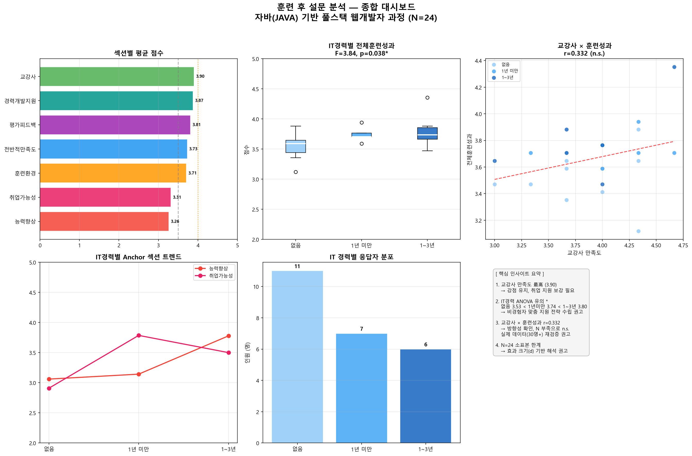
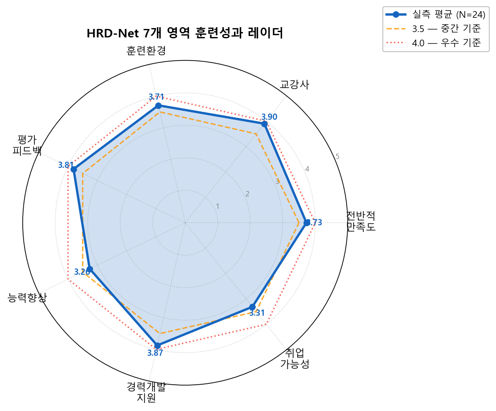
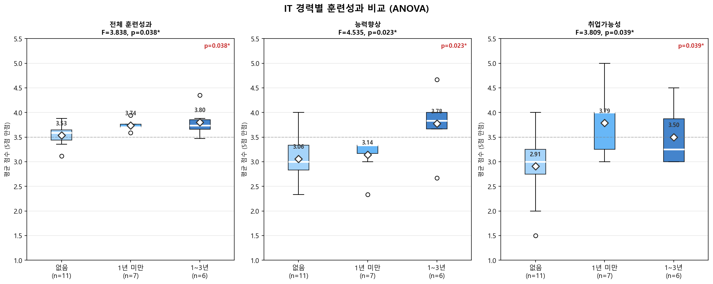
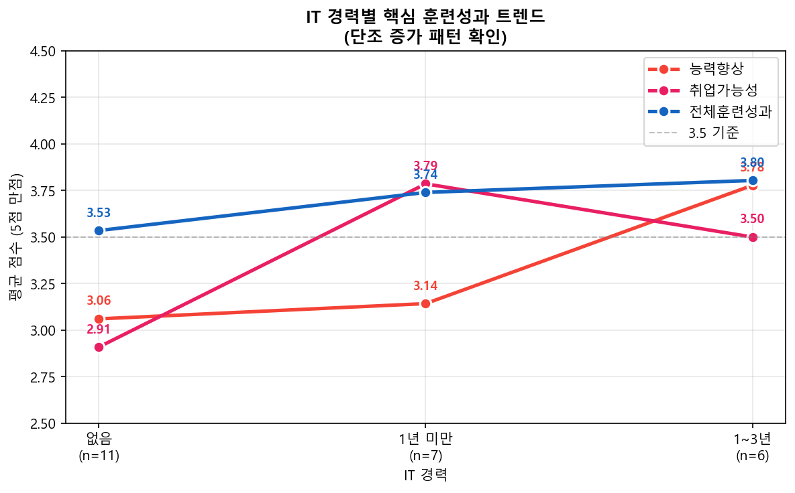
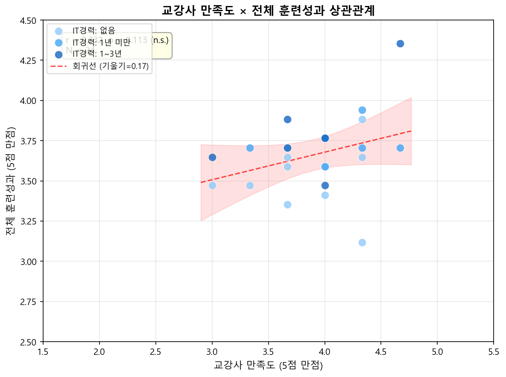
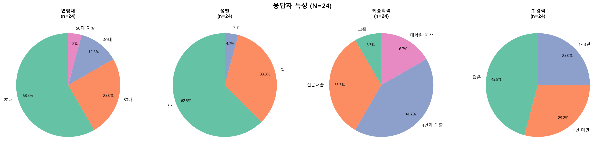
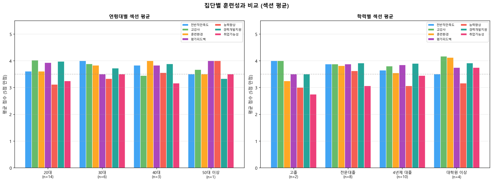
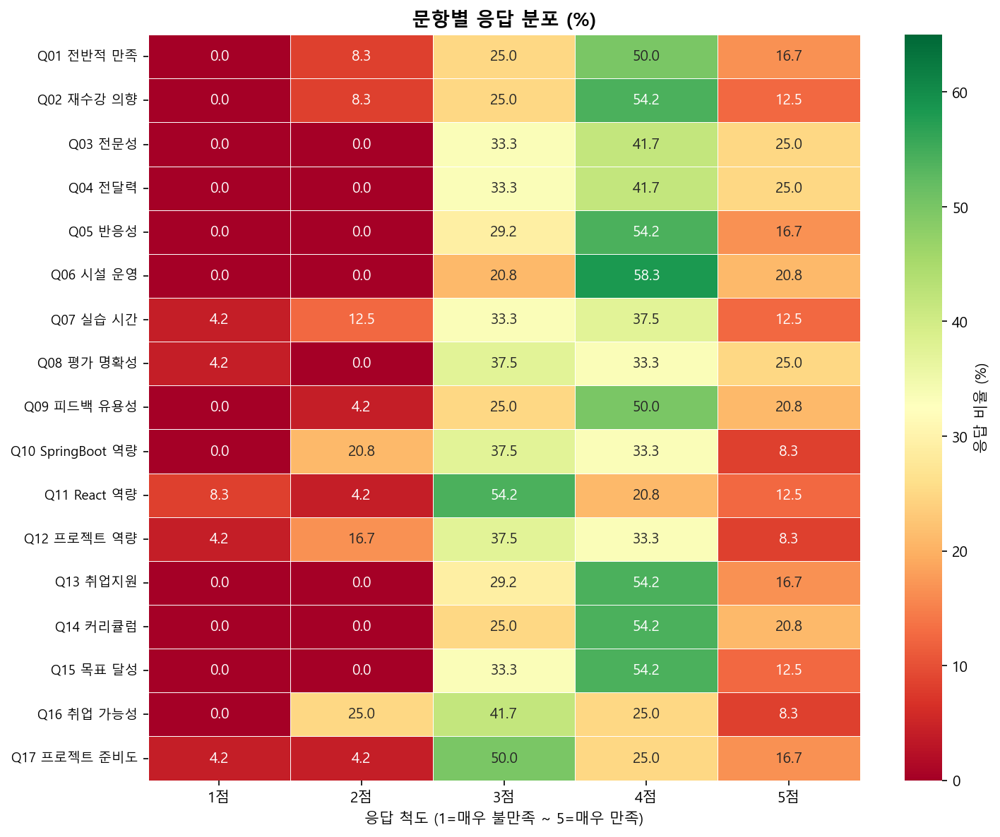

IT 사전 경력에 따라 훈련성과가 통계적으로 유의미하게 다른지 일원 분산분석(One-Way ANOVA)으로 검증했습니다. 3개 집단(없음 n=11, 1년 미만 n=7, 1~3년 n=6) 모두 유의한 차이를 보였으며, 효과 크기 η²는 대효과 수준입니다.
| 종속 변수 | F값 | p값 | η² (효과 크기) | 유의성 |
|---|---|---|---|---|
| 전체 훈련성과 | 3.838 | 0.038 | 0.268 | ✅ p < .05대 효과 |
| 능력향상 | 4.535 | 0.023 | 0.302 | ✅ p < .05대 효과 |
| 취업가능성 | 3.809 | 0.039 | 0.266 | ✅ p < .05대 효과 |
| 전반적만족도 | 2.950 | 0.074 | 0.219 | ⚡ p < .10 경향 |
| 교강사 | 0.874 | 0.432 | 0.077 | ❌ n.s. |



섹션 간 전체 상관행렬 (Pearson r)
| 전반적만족도 | 교강사 | 훈련환경 | 평가피드백 | 능력향상 | 경력개발지원 | 취업가능성 | 전체훈련성과 | |
|---|---|---|---|---|---|---|---|---|
| 전반적만족도 | 1.000 | −0.081 | 0.553 | −0.181 | 0.291 | −0.111 | −0.100 | 0.387 |
| 교강사 | −0.081 | 1.000 | −0.060 | −0.065 | −0.199 | 0.217 | 0.154 | 0.332 |
| 훈련환경 | 0.553 | −0.060 | 1.000 | −0.100 | 0.286 | 0.050 | 0.226 | 0.597 |
| 평가피드백 | −0.181 | −0.065 | −0.100 | 1.000 | 0.084 | 0.139 | 0.103 | 0.342 |
| 능력향상 | 0.291 | −0.199 | 0.286 | 0.084 | 1.000 | −0.187 | 0.139 | 0.523 |
| 경력개발지원 | −0.111 | 0.217 | 0.050 | 0.139 | −0.187 | 1.000 | −0.194 | 0.294 |
| 취업가능성 | −0.100 | 0.154 | 0.226 | 0.103 | 0.139 | −0.194 | 1.000 | 0.493 |
| 전체훈련성과 | 0.387 | 0.332 | 0.597 | 0.342 | 0.523 | 0.294 | 0.493 | 1.000 |
진한 초록 셀 r ≥ 0.50 · 연한 초록 셀 r ≥ 0.30 · 진한 노란 셀은 자기 상관(1.000)



IT 경력 '없음' 집단의 취업가능성 평균이 2.91로 최저입니다. 비경험자 전용 기초 Java·웹 개념 선행 학습 또는 병행 보충 세션을 도입하면 집단 내 편차를 줄이고 전체 훈련성과를 높일 수 있습니다.
취업가능성 섹션이 전 섹션 중 최저(3.31)이며, 특히 비경험자(2.91)의 체감 취업 가능성이 현저히 낮습니다. 모의 면접, 포트폴리오 리뷰 세션, 기업 멘토링 연계 등 실질적 취업 지원 프로그램을 커리큘럼에 포함할 것을 권고합니다.
교강사 섹션은 전 영역 최고점(3.90)으로 핵심 강점입니다. 현 강사진 역량을 유지하되, Q07(실습 시간) 항목의 응답 분산이 가장 넓어 수강생별 요구가 이질적임을 시사합니다. 수준별 실습 시간 탄력 운영을 검토하세요.
본 분석은 N=24 더미 데이터 기반 파일럿입니다. 교강사 × 훈련성과 상관(r=0.332)의 유의성을 확보하려면 실제 수강생 전수 응답이 필요합니다. N≥30 이상 확보 시 현 패턴의 통계적 검증이 가능합니다.